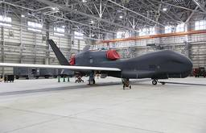
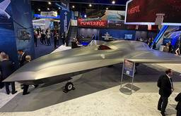
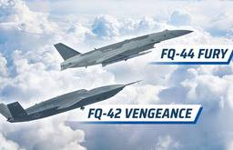
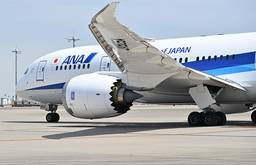
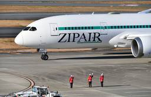
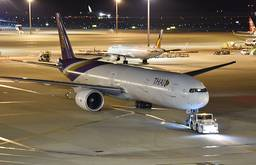
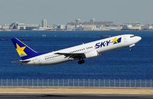

Aviation Wire
https://www.aviationwire.jp
航空経済紙「Aviation Wire」は、航空機やエアライン、空港、官公庁に関する情報や各種統計などをお届けして参ります。
フィード

空自の無人偵察機RQ-4B、鳥取沖で墜落と推定 受領初号機か
Aviation Wire
航空自衛隊三沢基地所属の無人偵察機RQ-4B「グローバルホーク」が9月15日、鳥取県沖の洋上でレーダーから航跡が消失した。その後に発見された浮遊物の写真からRQ-4Bの機体とみられ、空自は同機が墜落したものと推定してい […]
4時間前

スカンクワークス、次世代無人戦闘機「Vectis」実物大模型を初公開 4機追加製造へ
Aviation Wire
ロッキード・マーチンは現地時間9月14日、有人戦闘機と連携する無人の協調型戦闘機（CCA）「Vectis（ヴェクティス）」の実物大模型を初公開したと発表した。先進開発部門「スカンクワークス」が開発している機体で、同社の […]
12時間前

米空軍、無人協調型戦闘機500機を2032年までに FQ-42とFQ-44命名
Aviation Wire
米空軍は現地時間9月14日、有人戦闘機と連携する無人の協調型戦闘機（CCA）のFQ-42を「Vengeance（ヴェンジェンス）」、FQ-44を「Fury（フューリー）」と正式命名したと発表した。トロイ・マインク空軍長 […]
14時間前
737MAX、初のランディングギア交換 アメリカン航空に整備済みキット供給
Aviation Wire
ボーイングとアメリカン航空（AAL/AA）は現地時間9月14日、737 MAXを対象としたボーイングのランディングギア（着陸装置）交換プログラムで、初の交換を終えたと発表した。従来から展開してきたプログラムを737 M […]
16時間前
JAL、国際線ファーストクラスに初のジェンダーレス化粧品 ビジネスもアメニティ刷新
Aviation Wire
日本航空（JAL/JL、9201）は9月14日、国際線ファーストクラスのコスメキットとビジネスクラスのアメニティを刷新すると発表した。ファーストクラスは9月中旬、ビジネスクラスは9月下旬からそれぞれ刷新。ファーストクラ […]
17時間前
大韓航空、アシアナ便をKE便名に 予約移行11/2から
Aviation Wire
大韓航空（KAL/KE）は現地時間9月14日、アシアナ航空（AAR/OZ）との統合に伴う便名変更と予約情報の移行を11月2日から順次始めると発表した。合併する12月17日以降に出発するアシアナ便を予約・購入済みの利用者 […]
18時間前

ANA、国際線7.9％増78万人 利用率82.0％＝7月実績
Aviation Wire
ANAホールディングス（9202）傘下の全日本空輸（ANA/NH）の2026年7月利用実績によると、国際線は旅客数が前年同月比7.9％増の78万6403人だった。座席供給量を示すASK（有効座席キロ）は2.4％増の53 […]
21時間前

ZIPAIR、CA正社員100人募集 26-27年度入社
Aviation Wire
ZIPAIR（ジップエア、TZP/ZG）は9月14日、2026年度と2027年度に入社する社員の新卒・既卒採用を始めた。客室乗務員（CA）として乗務も行う正社員「Z_ONE」で、入社後は空港旅客業務やサービス企画業務な […]
1日前

タイ国際航空、中部深夜便27年1月再開 1年9カ月ぶり
Aviation Wire
タイ国際航空（THA/TG）は9月14日、バンコク（スワンナプーム）－中部線を2027年1月18日から増便すると発表した。中部発の深夜便を1年9カ月ぶりに再開し、乗り継ぎ需要などに対応する。週5往復追加し、増便後の同路 […]
1日前

スカイマーク、国内唯一ウイングレットなし737退役チャーター JA737Nで11/7神戸発着
Aviation Wire
スカイマーク（SKY/BC、9204）は9月14日、ボーイング737-800型機（登録記号JA737N）の退役に伴い、11月7日に神戸空港発着のチャーターフライトを実施すると発表した。JA737Nは2007年に導入され […]
2日前